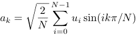
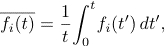
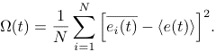

Introduction
The Fermi-Pasta-Ulam problem is named after the numerical experiments first performed by Enrico Fermi, John Pasta, and Stanislaw Ulam in 1954–1955 on the Los Alamos MANIAC computer, one of the first electronic computers. They wanted to understand how a crystal evolves toward thermal equilibrium by simulating a chain of particles coupled by springs.
Suppose that we start with a simple model of a crystal, a system of particles of mass m connected by harmonic springs – a model inspired by the Debye theory of a crystal. The energy of such a system can be expressed as:
where ui is the displacement of particle i from its equilibrium position, pi is its momentum, and k is the usual spring constant. The two ends of the chain are assumed to be fixed and hence u0 = uN = 0.
The usual way of understanding a system of masses connected by springs is to express the energy in terms of the normal modes. The latter are related to the displacement by

The energy of the system can be expressed in terms of the normal mode amplitudes as

where

The equipartition theorem in statistical mechanics says that the average contribution of each quadratic contribution to the energy is kT/2, where T is the absolute temperature and k is Boltzmann's constant. However, the energy in each normal mode remains constant because the normal modes are independent of each other. Hence, if we solve Newton's equations of motion for a system of masses connected by linear springs, the energy in each mode will be the same as it was initially. That is, if we initially put all of the energy into a single mode, the energy will stay in this mode indefinitely, and the equipartition theorem will not be satisfied.
A system that is ergodic (or more accurately quasi-ergodic) is one for which all accessible microstates are equally probable over a long period of time. If the system were ergodic, the system would eventually have an equal distribution of energy between the various Fourier modes. Hence, we conclude that a system of particles connected by linear springs is non-ergodic.
What happens if we make the springs nonlinear? For example, suppose we take the potential energy to be

The last term leads to a coupling between the modes. Fermi, Pasta, and Ulam thought that this coupling would lead to the energy that was initially in a single mode eventually drifting into the other modes until the equipartition theorem is satisfied. However, when they did the simulation, they found to their great surprise that this energy was shared by only a few other modes; the remaining modes were hardly excited. Moreover, after a long time the initial state was almost completely recovered. This result, which is known as the FPU problem or the FPU paradox, shows that nonlinearity is not sufficient to guarantee the equipartition of energy. It turns out that ergodic behavior is only observed when the magnitude of the nonlinear term is more than a certain critical value.
The Program
The program uses the Verlet algorithm to solve Newton's equations of motion numerically. The user can select the initial mode (k ≥ 1) of the system. The energy in this mode (red) and the two neighboring modes k + 1 (blue) and k - 1 (green) are plotted. The mean energy in these three modes is given when the simulation is stopped.
If the system is ergodic, then all particles will see the same average environment, and the time average of any physical quantity associated with individual particles will be the same for each particle if the time t is sufficiently long. The time average of this quantity f for particle i is defined as

The time average of f averaged over all particles is
 .
.
We will choose the physical quantity of interest to be the potential energy of a particle, ei, defined as
ei = Σi ≠ j u(rij),
where u(rij) is the potential energy of interaction between particle i and j.
A measure of the difference between the mean value of ei compared to its average over all particles is the energy metric Ω(t), defined as
.
If the system is ergodic over the time interval t, then it can be shown that Ω(t) decreases as 1/t. The program plots 1/Ω(t) versus t.
Problems
References
Updated 2 May 2007.